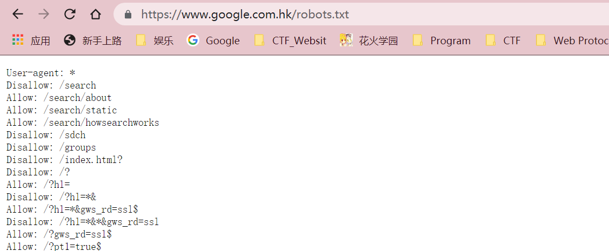
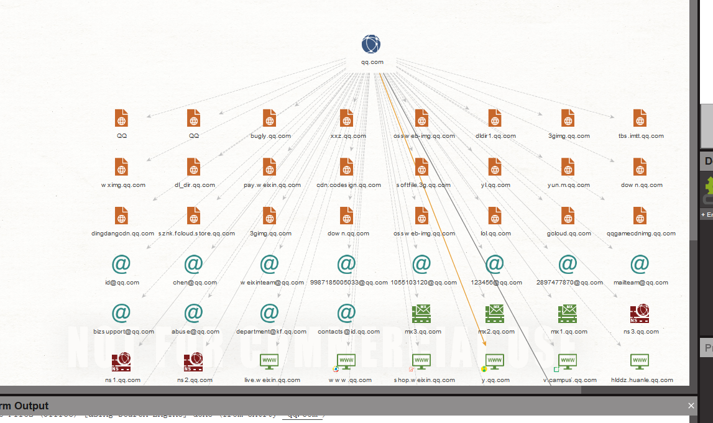

渗透测试流程
信息搜集 -> 存在漏洞 -> 攻击
-> 不存在漏洞 -> 漏洞挖掘 -> 存在漏洞 -> 攻击 -> 权限维持 -> 内网渗透
信息搜集
网站目录
- 登陆入口
- 后台入口
- 数据库下载地址
- 网站目录结构
- GIR/SVN泄露
- 代码泄露
怎么获得网站目录
- 爬虫爬取
- 暴力扫描
- 搜索引擎
- …….
IP/端口扫描
- IP开放端口
- 域名,子域名
- IP80
前端代码
后端代码
服务器
数据库
nmap扫描
扫描语法
扫描步骤
一般使用 -sS进行扫描(使用SYN进行扫描)
nmap 123.50.77.33 -p 80 -sS
知道端口，查看端口所代表的服务以及版本。
nmap 47.111.119.22 -p 80 -sS -sV
PORT STATE SERVICE VERSION
80/tcp open http nginx 1.16.1
然后想要知道操作系统加 -O
Too many fingerprints match this host to give specific OS details
如果想要包括全部的知识，可以使用-A
随机扫描
-iR随机扫描
nmap -iR 2 -p 80 -sS
扫描常见端口
--top-ports num
root@kali:/home/violet# nmap 210.216.31.29 --top-ports 5
Starting Nmap 7.80 ( https://nmap.org ) at 2021-09-16 10:45 CST
Nmap scan report for 210.216.31.29
Host is up (0.11s latency).
PORT STATE SERVICE
21/tcp closed ftp
22/tcp closed ssh
23/tcp closed telnet
80/tcp closed http
443/tcp closed https
Nmap done: 1 IP address (1 host up) scanned in 0.63 seconds
切换扫描方式
-sS/sT/sA/sW/sM: TCP SYN/Connect()/ACK/Window/Maimon scans
-sU: UDP Scan输出形式
-oN/-oX/-oS/-oG <file>: Output scan in normal, XML, s|<rIpt kIddi3,
and Grepable format, respectively, to the given filename.脚本
nmap url --script="路径"
nmap 210.216.31.29 -n -T3 -sA -e eth0 -F
-n 取消DNS解析, -e指定网卡, -T3速度适宜, -F素的适宜
-Pn 认为它在网络.
主机发现
HOST DISCOVERY:
// 直接列出扫描目标，而不进行扫描
-sL: List Scan - simply list targets to scan
// 因为TCP，所以肯定是要给端口的
-PS/PA/PU/PY[portlist]: TCP SYN/ACK, UDP or SCTP discovery to given ports
规避防火墙
FIREWALL/IDS EVASION AND SPOOFING:使用这个部分.
// 伪造IP
-D <decoy1,decoy2[,ME],...>: Cloak a scan with decoys
// 伪造端口
-g/--source-port <portnum>: Use given port number
nmap -F -O -D1.1.1.1,2.2.2.2 8.8.8.8 -g996 8.8.8.8 -n
-D 使用这个命令可可能会让目标主机管理员认为该扫描使用的是诱饵主机进行扫描的，而不是真实的扫描地址，因此会忽略这次扫描，从而，我们可以可以使用自己真实的ip地址进行扫描，以达到欺骗目标主机管理员的目的
所以原理为，使用虚拟IP作为诱饵让目标主机认为这次仅仅为一次没有用的扫描，从而忽视使防火墙不进行拦截，从而使我们的真实IP获得主机的信息。
--spoof-mac <mac address/prefix/vendor name>: Spoof your MAC address
空闲扫描
-sI <zombie host[:probeport]>: Idle scan
这个指令需要有闲置的端口，那如何去寻找呢？使用脚本。
nmap --script ipidseq -iR 100 -oN ipidseq.txt
脚本名为ipdiseq，因为不知道哪个ip有空闲端口，所以选择-iR
如果知道目标网络哪个为闲置端口，选择下面的命令
nmap -Pn -sI ip:port destination
简单总结
帮助文档
TARGET SPECIFICATION:
Can pass hostnames, IP addresses, networks, etc.
Ex: scanme.nmap.org, microsoft.com/24, 192.168.0.1; 10.0.0-255.1-254
-iL <inputfilename>: Input from list of hosts/networks
-iR <num hosts>: Choose random targets
--exclude <host1[,host2][,host3],...>: Exclude hosts/networks
--excludefile <exclude_file>: Exclude list from file
HOST DISCOVERY:
-sL: List Scan - simply list targets to scan
-sn: Ping Scan - disable port scan
-Pn: Treat all hosts as online -- skip host discovery
-PS/PA/PU/PY[portlist]: TCP SYN/ACK, UDP or SCTP discovery to given ports
-PE/PP/PM: ICMP echo, timestamp, and netmask request discovery probes
-PO[protocol list]: IP Protocol Ping
-n/-R: Never do DNS resolution/Always resolve [default: sometimes]
--dns-servers <serv1[,serv2],...>: Specify custom DNS servers
--system-dns: Use OS's DNS resolver
--traceroute: Trace hop path to each host
SCAN TECHNIQUES:
-sS/sT/sA/sW/sM: TCP SYN/Connect()/ACK/Window/Maimon scans
-sU: UDP Scan
-sN/sF/sX: TCP Null, FIN, and Xmas scans
--scanflags <flags>: Customize TCP scan flags
-sI <zombie host[:probeport]>: Idle scan
-sY/sZ: SCTP INIT/COOKIE-ECHO scans
-sO: IP protocol scan
-b <FTP relay host>: FTP bounce scan
PORT SPECIFICATION AND SCAN ORDER:
-p <port ranges>: Only scan specified ports
Ex: -p22; -p1-65535; -p U:53,111,137,T:21-25,80,139,8080,S:9
--exclude-ports <port ranges>: Exclude the specified ports from scanning
-F: Fast mode - Scan fewer ports than the default scan
-r: Scan ports consecutively - don't randomize
--top-ports <number>: Scan <number> most common ports
--port-ratio <ratio>: Scan ports more common than <ratio>
SERVICE/VERSION DETECTION:
-sV: Probe open ports to determine service/version info
--version-intensity <level>: Set from 0 (light) to 9 (try all probes)
--version-light: Limit to most likely probes (intensity 2)
--version-all: Try every single probe (intensity 9)
--version-trace: Show detailed version scan activity (for debugging)
SCRIPT SCAN:
-sC: equivalent to --script=default
--script=<Lua scripts>: <Lua scripts> is a comma separated list of
directories, script-files or script-categories
--script-args=<n1=v1,[n2=v2,...]>: provide arguments to scripts
--script-args-file=filename: provide NSE script args in a file
--script-trace: Show all data sent and received
--script-updatedb: Update the script database.
--script-help=<Lua scripts>: Show help about scripts.
<Lua scripts> is a comma-separated list of script-files or
script-categories.
OS DETECTION:
-O: Enable OS detection
--osscan-limit: Limit OS detection to promising targets
--osscan-guess: Guess OS more aggressively
TIMING AND PERFORMANCE:
Options which take <time> are in seconds, or append 'ms' (milliseconds),
's' (seconds), 'm' (minutes), or 'h' (hours) to the value (e.g. 30m).
-T<0-5>: Set timing template (higher is faster)
--min-hostgroup/max-hostgroup <size>: Parallel host scan group sizes
--min-parallelism/max-parallelism <numprobes>: Probe parallelization
--min-rtt-timeout/max-rtt-timeout/initial-rtt-timeout <time>: Specifies
probe round trip time.
--max-retries <tries>: Caps number of port scan probe retransmissions.
--host-timeout <time>: Give up on target after this long
--scan-delay/--max-scan-delay <time>: Adjust delay between probes
--min-rate <number>: Send packets no slower than <number> per second
--max-rate <number>: Send packets no faster than <number> per second
FIREWALL/IDS EVASION AND SPOOFING:
-f; --mtu <val>: fragment packets (optionally w/given MTU)
-D <decoy1,decoy2[,ME],...>: Cloak a scan with decoys
-S <IP_Address>: Spoof source address
-e <iface>: Use specified interface
-g/--source-port <portnum>: Use given port number
--proxies <url1,[url2],...>: Relay connections through HTTP/SOCKS4 proxies
--data <hex string>: Append a custom payload to sent packets
--data-string <string>: Append a custom ASCII string to sent packets
--data-length <num>: Append random data to sent packets
--ip-options <options>: Send packets with specified ip options
--ttl <val>: Set IP time-to-live field
--spoof-mac <mac address/prefix/vendor name>: Spoof your MAC address
--badsum: Send packets with a bogus TCP/UDP/SCTP checksum
OUTPUT:
-oN/-oX/-oS/-oG <file>: Output scan in normal, XML, s|<rIpt kIddi3,
and Grepable format, respectively, to the given filename.
-oA <basename>: Output in the three major formats at once
-v: Increase verbosity level (use -vv or more for greater effect)
-d: Increase debugging level (use -dd or more for greater effect)
--reason: Display the reason a port is in a particular state
--open: Only show open (or possibly open) ports
--packet-trace: Show all packets sent and received
--iflist: Print host interfaces and routes (for debugging)
--append-output: Append to rather than clobber specified output files
--resume <filename>: Resume an aborted scan
--stylesheet <path/URL>: XSL stylesheet to transform XML output to HTML
--webxml: Reference stylesheet from Nmap.Org for more portable XML
--no-stylesheet: Prevent associating of XSL stylesheet w/XML output
MISC:
-6: Enable IPv6 scanning
-A: Enable OS detection, version detection, script scanning, and traceroute
--datadir <dirname>: Specify custom Nmap data file location
--send-eth/--send-ip: Send using raw ethernet frames or IP packets
--privileged: Assume that the user is fully privileged
--unprivileged: Assume the user lacks raw socket privileges
-V: Print version number
-h: Print this help summary page.
EXAMPLES:
nmap -v -A scanme.nmap.org
nmap -v -sn 192.168.0.0/16 10.0.0.0/8
nmap -v -iR 10000 -Pn -p 80
SEE THE MAN PAGE (https://nmap.org/book/man.html) FOR MORE OPTIONS AND EXAMPLES
子域名
定义
域名的核心是域名系统（英语：Domain Name System，缩写：DNS），域名系统中的任何名称都是域名。在域名系统的层次结构中，各种域名都隶属于域名系统根域的下级。域名的第一级是顶级域，它包括通用顶级域，例如.com、.net和.org；以及国家和地区顶级域，例如.us、.cn和.tk。顶级域名下一层是二级域名，一级一级地往下。现在，还有一些新兴的中文域名，例如.在线等。这些域名向人们提供注册服务，人们可以用它创建公开的互联网资源或运行网站。顶级域名的管理服务由对应的域名注册管理机构（域名注册局）负责，注册服务通常由域名注册商负责[2]。
获得方式
爆破
域传输漏洞
证书子域名
HTTP头跨域策略文件
搜索引擎
site：*.baidu.com
其他搜索引擎
https://developers.facebook.com/tools/ct
https://searchdns.netcraft.com/
公开信息
robot.txt

会存放子域名，只要用于表明可以使用爬虫的网站
Maltego 的使用

OneForAll的使用
python oneforall.py --target example.com run
网站指纹识别
whatruns
whatweb
网站目录扫描
burpsuit
爬虫
打开网站即可使用。
dirsearch
暴力破解
python3 dirsearch.py -u www.XXX.com -e*
jaeles的使用
./jaeles -u url
Nikto
nikto -h url
具体可以看看文档。
nmap 可以和 Nikto结合。
Wafwoof
发现waf
加-u即可
代理
proxychain-h 与 tor
CDN
简单地说就是储存信息的设备，会将源站的信息储存然后返回给你，从而导致无法攻击目标
CDN检测
whichCDN
查找源IP而非CDN
蜜罐
设一个套让你钻，里面。然后就可以获得你的攻击方式。
Hfish
总结
端口扫描-》子域名的搜集-》指纹识别（可以通过识别来寻找漏洞）-》目录扫描
子域名可能会与域名有很多关系